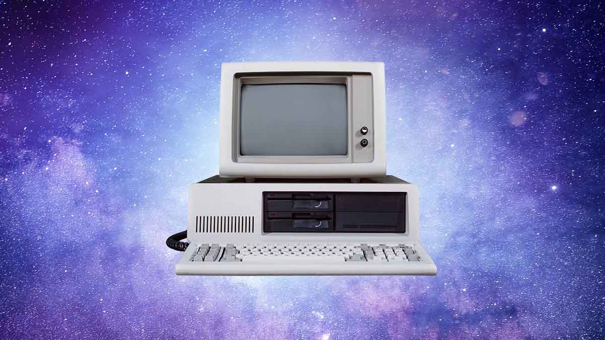
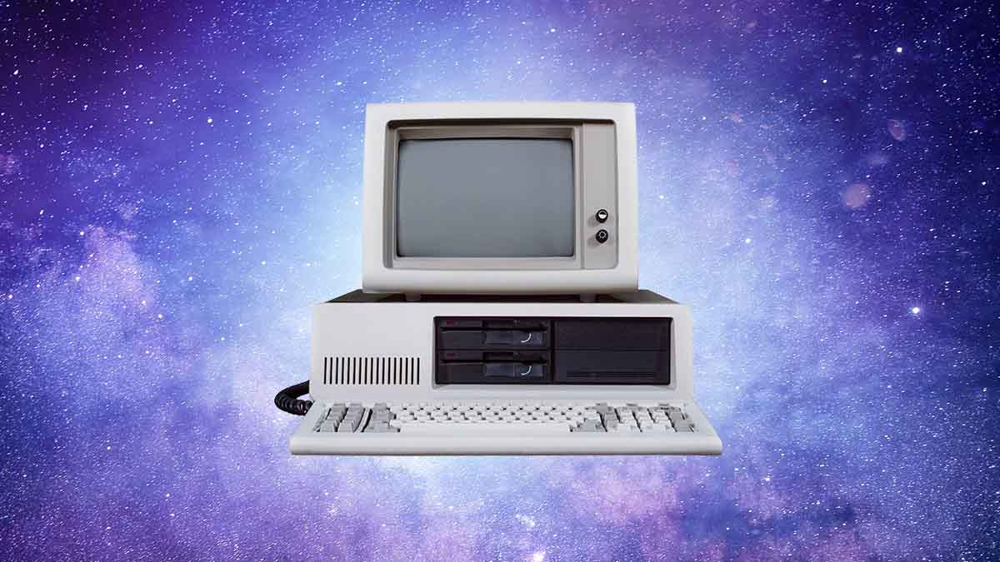

1957
Sovjetunionen har nu skickat upp den första satelliten i rymden. Händelsen blev en käftsmäll för USA som nu insåg att de var tvungna att komma ikapp och startar myndigheten APRA (Advance Research Projects Agency) för att på ett samlat sätt hålla sitt försvar i framkant. Joseph Licklider, datorforskare och psykolog från Kalifornien, hade ett intresse för informationsteknologi. Han hade en ide där ett parallellt system där militären skulle ha möjlighet att utbyta information med varandra utan att Sovjetunionen skulle kunna ta del av den. ARPA nappar på hans ide och anställer nu Licklider som projektledare. Arpa är nu ett decentraliserat system som bygger på att datorer inte skall kommunicera via en gemensam centraldator. Joseph slutar arbeta på ARPA 1964 för att börja som konsult på IBM.